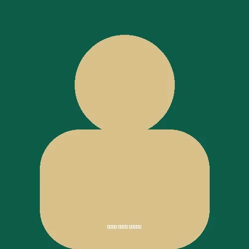
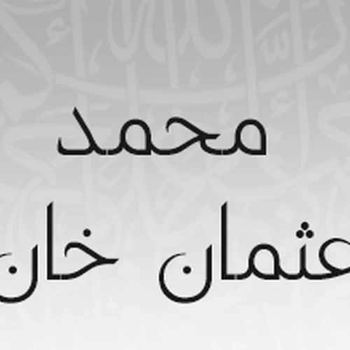
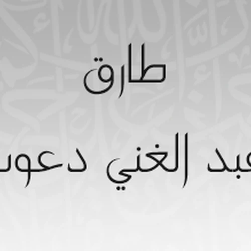

سورة الغاشية بصوت الشيخ عبدالله الجهني
الاستماع لسورة الغاشية بصوت الشيخ عبدالله الجهني مع إمكانية التحميل المباشر للسورة بصيغة MP3
تحميل سورة الغاشية MP3سور أخرى بصوت الشيخ عبدالله الجهني
سورة الفجر
سورة البلد
سورة الشمس
سورة الليل
سورة الضحى
سورة الشرح
سورة التين
سورة العلق
سورة القدر
سورة البينة
سورة الزلزلة
سورة العاديات
سورة القارعة
سورة التكاثر
سورة العصر
سورة الهمزة
سورة الفيل
سورة قريش
سورة الماعون
سورة الكوثر
سورة الكافرون
سورة النصر
سورة المسد
سورة الإخلاص
سورة الفلق
سورة الناس
سورة الفاتحة
سورة البقرة
سورة آل عمران
سورة النساء
سورة الغاشية بصوت قراء آخرين
سورة الغاشية بصوت الشيخ علي جابر
سورة الغاشية بصوت الشيخ محمد الأمين قنيوة
سورة الغاشية بصوت الشيخ صالح الهبدان
سورة الغاشية بصوت الشيخ نذير المالكي
سورة الغاشية بصوت الشيخ محمد عبدالحكيم سعيد العبدالله
سورة الغاشية بصوت الشيخ صلاح الهاشم
سورة الغاشية بصوت الشيخ أحمد صابر
سورة الغاشية بصوت الشيخ هيثم الدخين
سورة الغاشية بصوت الشيخ حاتم فريد الواعر

سورة الغاشية بصوت الشيخ خالد كريم محمدي سورة الغاشية بصوت الشيخ الزين محمد أحمد سورة الغاشية بصوت الشيخ هاني الرفاعي
سورة الغاشية بصوت الشيخ محمد عثمان خان سورة الغاشية بصوت الشيخ خالد المهنا سورة الغاشية بصوت الشيخ مصطفى إسماعيل سورة الغاشية بصوت الشيخ محمود الرفاعي
سورة الغاشية بصوت الشيخ طارق عبدالغني دعوب سورة الغاشية بصوت الشيخ إدريس أبكر سورة الغاشية بصوت الشيخ إبراهيم كشيدان سورة الغاشية بصوت الشيخ نبيل الرفاعي سورة الغاشية بصوت الشيخ محمد خليل القارئ سورة الغاشية بصوت الشيخ عبدالباري الثبيتي سورة الغاشية بصوت الشيخ محمد سايد سورة الغاشية بصوت الشيخ عبدالله بصفر سورة الغاشية بصوت الشيخ شيرزاد عبدالرحمن طاهر سورة الغاشية بصوت الشيخ محمد أيوب سورة الغاشية بصوت الشيخ ياسر الدوسري سورة الغاشية بصوت الشيخ محمد رشاد الشريف سورة الغاشية بصوت الشيخ ياسر القرشي